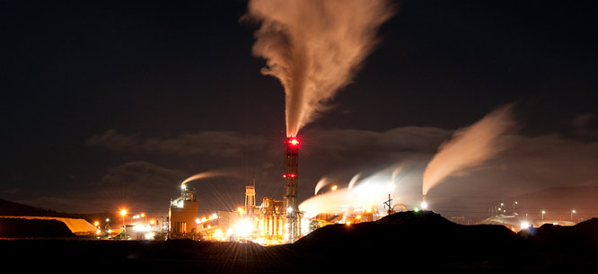

Monsanto’s Superfund Secret
Monsanto’s weedkiller comes from beneath the soil. The active ingredient in Roundup is glyphosate, which is ultimately derived from elemental phosphorous extracted from phosphate rock buried below ground. Monsanto gets its phosphate from mines in Southeast Idaho near the town of Soda Springs, a small community of about 3,000 people. The company has been operating there since the 1950s.
I went to visit last summer, and what I found was startling. I stood just beyond a barbed-wire fence at about nine o’clock at night and watched as trucks dumped molten red heaps of radioactive refuse over the edge of what is fast becoming a mountain of waste. This dumping happened about every fifteen minutes, lighting up the night sky. Horses grazed in a field just a few dozen yards away, glowing in the radiating rays coming from the lava-like sludge. Rows of barley, for Budweiser beer, waved in the distance.
When phosphate ore is refined into elemental phosphorous, it leaves a radioactive by-product known as slag. Monsanto’s elemental phosphorous facility, situated just a few miles from its phosphate mines, produces prodigious quantities of slag that contains elevated concentrations of radioactive material. For years, this slag was actually sold to the town of Soda Springs and nearby Pocatello, and people built their homes and roadways out it. In the 1980s, however, the EPA conducted a radiological survey of the community and warned that citizens might be at risk from elevated gamma ray exposure. The study concluded that if business continued as usual in Soda Springs, within four decades “the probability of contracting cancer due to exposure from elemental phosphorous slag” would “be about one chance in 2,500 in Pocatello and one chance in 700 in Soda Springs.”
The EPA, facing serious pressure from Monsanto and community members who feared what this study might mean for property values, later agreed to submit the report for review, and ultimately recommended the initiation of new studies. In the meantime, the mayor of Soda Springs worked with the city council to ban the further sale of slag in the community.
Nevertheless, a website created by the Phosphorous Slag Technical Work Group—a coalition that includes Monsanto, EPA officials, local public health agents, and other mining concerns—offers advice to Idahoans, including the helpful tip that if dangerous contamination is found, homeowners might consider “spending less time in the basement.”
Monsanto’s Soda Springs plant is currently an active Superfund site, having achieved that toxic waste site designation in 1990. Harmful onsite pollutants include cadmium, selenium, and radioactive radium all of which can cause serious health problems in humans in high concentrations.
In 2013, over two decades after EPA declared Monsanto’s Soda Springs plant a Superfund site, the EPA explained that pollution problems continued to plague the facility: “The remedy for the Monsanto site is currently not protective because concentrations” of “contaminants of concern” continued to leach into groundwater. In a five-year review of the site, the EPA found that some harmful chemicals were increasing in plumes migrating from the plant. The agency offered a disheartening conclusion: “Monitoring trends indicate that the groundwater performance standards will not be met in the foreseeable future.” This was the last five-year review of the site to date. Currently, the EPA’s website for the facility reports that groundwater contamination is “not under control” even as elemental phosphorous production continues.
In the past, Monsanto has also had elevated levels of mercury emissions at the plant. Citing an EPA study, Keith Riddler of the Associated Press reported that in 2006 “about 684 pounds of mercury was emitted in [Idaho], 659 of that from Monsanto Co.’s Soda Springs phosphate processing plant in eastern Idaho.” In 2015, the company reported mercury compound emissions topping 875 pounds. For context, the third- and fourth-largest emitters of mercury compounds among power plants in the United States—which the Obama administration targeted for serious mercury emissions reductions under the Clean Power Plan—put out 823 pounds and 782 pounds respectively in 2013. ...continue reading